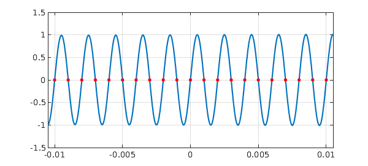

1. What Chebfun does
Let us do a test of the speed and accuracy of the Chebfun algorithm for computing roots. We'll pick a function whose roots we know:
f = chebfun(@(x) exp(x).*sin(1000*pi*x));
Here is the length of the function, approximately $1000\pi$.
n = length(f)
n =
3282
This function has 2001 roots linearly spaced from $-1$ to $1$:
exact = linspace(-1,1,2001)';
Let's compute them with Chebfun. We'll do it twice just to make sure the timing estimate is realistic.
r = roots(f); tic, r = roots(f);
Here is the time elapsed:
toc
Elapsed time is 0.543148 seconds.
Here is the maximum error:
norm(r-exact,inf)
ans =
4.440892098500626e-16
This number is twice machine epsilon, which looks very good. (Admittedly, you couldn't ask for a better conditioned problem than this one, since the derivative of $f$ at each root is large.)
For fun we plot $f$ and its roots over a short interval:
d = [-0.0105,0.0105]; plot(f,'interval',d,'linewidth',1.6) axis([d -1.5 1.5]), grid on hold on, plot(r,f(r),'.r','markersize',18), hold off

2. What Chebfun might do
"Classically", using the MATLAB roots command, it takes $O(n^3)$ operations to compute the eigenvalues of a companion matrix, which is the method that MATLAB has used since the 1970s for finding roots of a polynomial in the monomial basis. We can illustrate that this computation is slow, if not really that the complexity is cubic, by the following experiment.
for ntest = [250 500 1000]
c = randn(ntest,1);
tic, roots(c); toc
end
Elapsed time is 0.087503 seconds. Elapsed time is 0.297758 seconds. Elapsed time is 1.853355 seconds.
It is clear from this experiment that calling Matlab roots for a polynomial of degree as large as our chebfun f would be very slow.
However, $O(n^2)$ algorithms for this problem have been available for quite a while, though they are not built into MATLAB. A key person in this effort over the years has been Dario Bini of the University of Pisa. See for example [2]. This group also offers Fortran software. Another notable contribution is [4].
The first author of this example, in collaboration with David Watkins and others, has been developing alternative $O(n^2)$ algorithms for the companion matrix eigenvalue problem [1].
All this is for the companion matrix eigenvalue problem, which corresponds to polynomial rootfinding in the monomial basis, a problem that makes sense when your roots are on or near the unit circle. What about the Chebfun context of roots on or near $[-1,1]$? Here the analogous matrix structure is a so-called colleague matrix, dating to Specht and Good around 1960; see Chapter 18 of [6]. What can be done in this case?
First of all we note what Chebfun currently does: following an idea of Boyd [3], it subdivides the interval when necessary. This is how a superficially $O(n^3)$ algorithm is brought down to $O(n^2)$, enabling the good performance seen above. Note that intervals are different from circles: if you split an interval in half, you get two intervals, but if you split a circle in half, you don't get two circles. Therefore this recursion trick is not available in the monomial case.
But what about an $O(n^2)$ linear algebra solution to the problem, rather than relying on splitting of intervals? Here too there has been progress [5], and we hope to have work of our own to report before long. An interesting project for the future will be to see whether Chebfun rootfinding can be improved by the use of $O(n^2)$ linear algebra algorithms rather than interval subdivision, while holding to Chebfun's principle of doing everything in MATLAB without relying on Mex files to link to Fortran or C.
References
-
J. Aurentz, T. Mach, R. Vandebril and D. S. Watkins, to appear.
-
D. A. Bini, P. Boito, Y. Eidelman, L. Gemignani, and I. Gohberg, A fast implicit QR eigenvalue algorithm for companion matrices, Linear Algebra and its Applications, 432 (2010), 2006-2031.
-
J. P. Boyd, Computing zeros on a real interval through Chebyshev expansion and polynomial rootfinding, SIAM Journal on Numerical Analysis, 40 (2002), 1666-1682.
-
S. Chandrasekaran, M. Gu, J. Xia and J. Zhu, A fast QR algorithm for companion matrices, Operator Theory: Advances and Applications, 179 (2007), 111-143.
-
Y. Eidelman, L. Gemignani, and I. Gohberg, Efficient eigenvalue computation for quasiseparable Hermitian matrices under low rank perturbations, Numerical Algorithms, 47 (2008), 253-273.
-
L. N. Trefethen, Approximation Theory and Approximation Practice, SIAM, 2013.